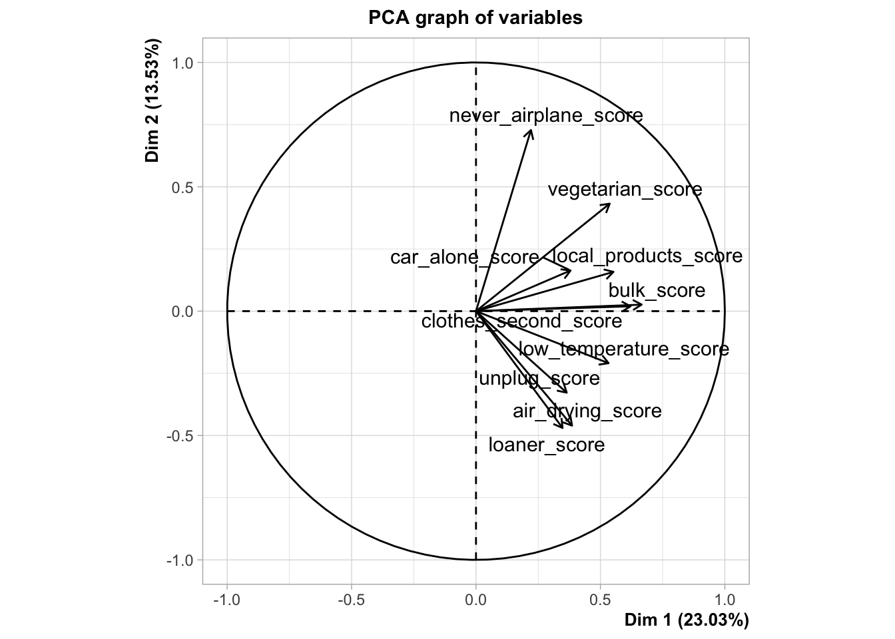
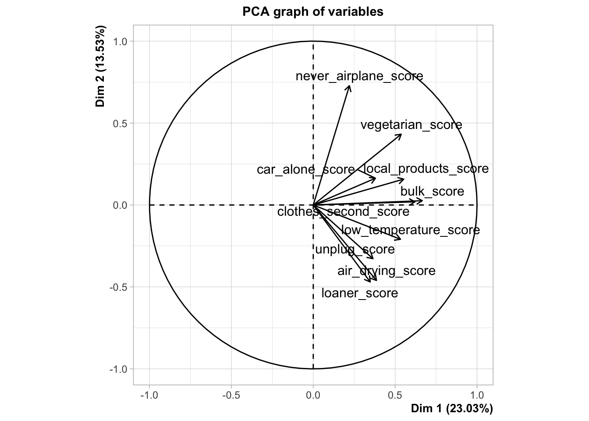
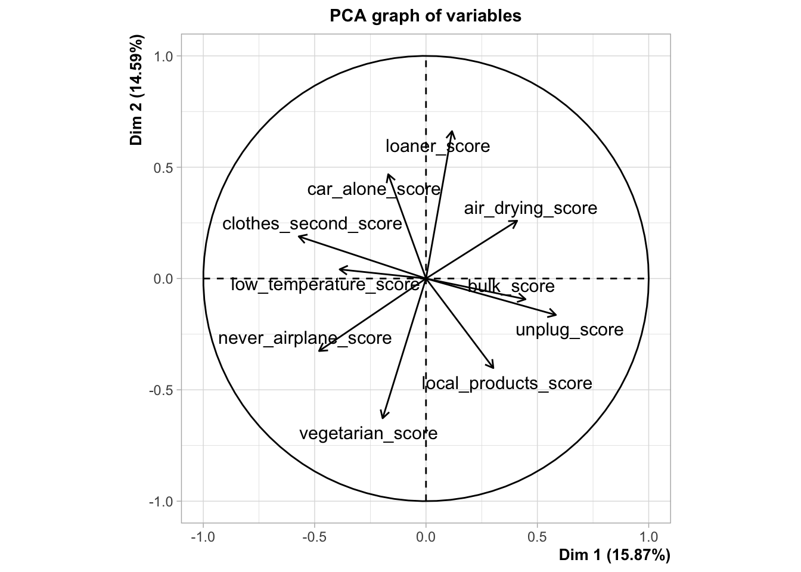

Session 7 : FactoMineR
Moonbin Jo
Understanding the properties of the participants (PCA)
In the earlier sessions, we focused on the habits of the study. We found out which habits were more difficult to implement and which habits had higher scores of constraint.
Now that we have understood the general perception of the ten habits, we will now focus on another important part of the study. The participants. For this session, we will focus on the participants of the study by looking at the score of constraint data.
Let’s look at the first participant
## car_alone_score never_airplane_score loaner_score clothes_second_score
## 1 0 5 1 2
## bulk_score local_products_score unplug_score low_temperature_score
## 1 2 2 1 0
## vegetarian_score air_drying_score
## 1 4 0Through these results we can see that this participant perceives the habits of never flying on an airplane and becoming vegetarian as very constraining (score range of 4-5), but also thinks that the other habits are not as constraining (score range of 0-2).
In this way we can see what habits this participant thinks as constraining and what are not. However, we have 167 participants to look at, and ten different habits to analyze. If we try to understand the participants by looking at them like this one by one, this will take a long time and we won’t be able to see the general distribution of the data from the participants. Therefore, we need a faster way to analyze the data and one that will also give a general understanding of the participants.
This will be done using a Principal component analysis (PCA). A PCA is tool that you can use to simplify the data that you have. For the score of constraint, we have ten different habits, meaning that we have ten different variables that will explain the participants. If we plot out the data using all ten of the habits, we will have to plot ten different dimensions. This is impossible to visualize and also impossible for us to understand. Therefore, a PCA is used to reduce the dimensions. This is done by identifying new principal components that explain the data the most. By constructing these principal components, we can reduce the amount of dimensions the data has and visualize it with less dimensions.
In short, by constructing new axes that explain more of the variance of the data than just one variable, we are able to understand the data with less dimensions.
This is a very rudimentary explanation on the PCA, so if you are interested in learning more please check out this page here.
Through a PCA we will be able to see…
- The tendency of the participants
- The overall tendency of scores
- and much more!
First we need to load the packages that are needed for the PCA.
FactoMineR will be used to conduct the PCA, and the
factoextra package will be used for visualization
Now we will conduct the PCA.
 

The PCA has given us two graphs, the
PCA graph of individuals, and the
PCA graph of variables. The first graph is the projection
of the 167 participants. If two participants are close to one another in
this graph, this indicates that two are similar in terms of scores of
constraint, and if they are far away from each other, this indicates
that they are different.
For example, if you see participant 27 and 54, they are very close to each other. However, for participant 66, they are quite far away from each other. This indicates that participant 27 and 54 have similar response patterns, while participant 66 has a very different response pattern. Let’s see if this is true.
## car_alone_score never_airplane_score loaner_score clothes_second_score
## 27 4 5 0 2
## 54 5 5 1 4
## bulk_score local_products_score unplug_score low_temperature_score
## 27 3 4 2 1
## 54 2 2 0 3
## vegetarian_score air_drying_score
## 27 5 0
## 54 5 0The participants 27 and 54 show a similar trend in responses. They have answered that habits such as not taking one’s car when they are alone, never taking an airplane and becoming vegetarian are very constraining, but habits such as air drying your laundry, using a loaner system for products, and unplugging one’s electrical devices when not using them are not.
Now let’s look at participants 27 and 66.
## car_alone_score never_airplane_score loaner_score clothes_second_score
## 27 4 5 0 2
## 66 3 0 2 0
## bulk_score local_products_score unplug_score low_temperature_score
## 27 3 4 2 1
## 66 1 4 3 0
## vegetarian_score air_drying_score
## 27 5 0
## 66 1 5We can see that there is a difference in responses between these two participants. For example, habits such as never flying on an airplane and becoming vegetarian were considered very constraining for participant 27, but are considered not constraining for participant 66. On the contrary, for the habit of air drying laundry, participant answered that this habit was not constraining, but it was very constraining for participant 66.
Now that we’ve seen what the first graph does, let’s see the second graph.
In the PCA graph of variables, you can see the arrows that represent the ten variables (ten habits). While the graph of individuals represented the participants with their projections, the graph of variables represent the variables by their correlations. If the arrows of two variables are headed toward the same direction, this means that they are positively correlated. If the arrows of two variables are directed toward the opposite direction, they are negatively correlated.
Not only can we see the association between variables, but we can also see the association of variables with the principal components that were calculated (the dimensions that were calculated with the PCA). The distance between the end of the arrow of the variable and the origin of the plot, shows how well the variable is represented on the dimensions that are visualized. If they are far away from the origin in this plot, that means they are well represented in the first and second dimension. If they are close to the origin in this plot, that means that they are probably represented in the other dimensions that are not visualized here (dimensions 3, 4, and so on).
Looking at this plot, we can see that the arrows of the variables are headed toward the positive side of Dim 1.
Let’s first look at the dimensions of the plot. Dim 1 is the first principal component that explains 23.03% of the total variance. Dim 2 is the second principal component that is orthogonal to Dim 1, and explains 13.53% of the total variance. In total, these two dimensions explain 36% of the total variance.


## $coord
## Dim.1 Dim.2 Dim.3 Dim.4 Dim.5
## age -0.001098184 -0.1937945 0.0621178 0.07143569 -0.2517602
##
## $cor
## Dim.1 Dim.2 Dim.3 Dim.4 Dim.5
## age -0.001098184 -0.1937945 0.0621178 0.07143569 -0.2517602
##
## $cos2
## Dim.1 Dim.2 Dim.3 Dim.4 Dim.5
## age 1.206008e-06 0.03755629 0.003858622 0.005103057 0.06338321## Dim.1 Dim.2 Dim.3 Dim.4 Dim.5
## age 1.206008e-06 0.03755629 0.003858622 0.005103057 0.06338321## Dim.1 Dim.2 Dim.3 Dim.4
## car_alone 0.0325117970 0.0003084242 0.0558230497 0.0402248411
## never_airplane 0.0008593306 0.2123723343 0.0007873824 0.0307890660
## loaner 0.0103927053 0.0362098416 0.0347284960 0.0056884535
## clothes_second 0.1351745575 0.0051112785 0.0372892798 0.0380403326
## bulk 0.1049944512 0.0064172558 0.0007068912 0.0309667030
## local_products 0.1773892811 0.0015650765 0.0112122710 0.0028033089
## unplug 0.0041329020 0.0141875484 0.1351736385 0.0056712984
## low_temperature 0.0231672638 0.0579599917 0.0187224218 0.1492377401
## vegetarian 0.1278023100 0.0542391807 0.0126726962 0.0008581092
## air_drying 0.0147997241 0.1474227014 0.0207086498 0.0216860357
## situation 0.0149983538 0.0311287386 0.0093561380 0.0309634082
## residence 0.0014670049 0.0357632087 0.0022652594 0.0030645947
## occupation 0.0039902664 0.0513749869 0.0108304335 0.0090033631
## Dim.5
## car_alone 0.0304869475
## never_airplane 0.0766516587
## loaner 0.0166258633
## clothes_second 0.0720261369
## bulk 0.0398636558
## local_products 0.0097910545
## unplug 0.0186708293
## low_temperature 0.0015128447
## vegetarian 0.0004924439
## air_drying 0.0749019043
## situation 0.0133895380
## residence 0.0221185027
## occupation 0.0942989406## $coord
## Dim.1 Dim.2 Dim.3 Dim.4 Dim.5
## age -0.001098184 -0.1937945 0.0621178 0.07143569 -0.2517602
##
## $cor
## Dim.1 Dim.2 Dim.3 Dim.4 Dim.5
## age -0.001098184 -0.1937945 0.0621178 0.07143569 -0.2517602
##
## $cos2
## Dim.1 Dim.2 Dim.3 Dim.4 Dim.5
## age 1.206008e-06 0.03755629 0.003858622 0.005103057 0.06338321## $coord
## Dim.1 Dim.2 Dim.3 Dim.4
## car_alone_Yes -0.288791033 0.02156291 -0.26826732 -0.20896219
## car_alone_No 0.259255587 -0.01935761 0.24083089 0.18759105
## never_airplane_Yes -0.045837642 -0.55240926 -0.03110518 0.17848335
## never_airplane_No 0.043172663 0.52029244 0.02929674 -0.16810641
## loaner_Yes -0.050358322 0.07205931 -0.06526010 -0.02423602
## loaner_No 0.475256664 -0.68005973 0.61589216 0.22872747
## clothes_second_Yes -0.485721526 -0.07240599 -0.18085464 0.16761749
## clothes_second_No 0.640882569 0.09553568 0.23862765 -0.22116197
## bulk_Yes -0.316865997 -0.06005331 -0.01843175 -0.11194308
## bulk_No 0.763065054 0.14461818 0.04438666 0.26957722
## local_products_Yes -0.598344650 -0.04308493 0.10664299 0.04893060
## local_products_No 0.682726588 0.04916101 -0.12168238 -0.05583107
## unplug_Yes -0.038989319 0.05537855 0.15807452 -0.02971096
## unplug_No 0.244107043 -0.34671791 -0.98968398 0.18601644
## low_temperature_Yes -0.089970501 0.10909297 -0.05733787 0.14854547
## low_temperature_No 0.592987392 -0.71902184 0.37790869 -0.97904970
## vegetarian_Yes -0.982827863 -0.49083385 0.21940191 0.05238859
## vegetarian_No 0.299455365 0.14955094 -0.06684902 -0.01596215
## air_drying_Yes -0.053638121 0.12977731 0.04498010 0.04223711
## air_drying_No 0.635405429 -1.53736197 -0.53284118 -0.50034724
## L -0.369999899 -0.01636038 0.14482646 0.35513700
## M -0.019073893 -0.16621726 0.04413471 -0.13611247
## H 0.210897074 0.29554929 -0.14601511 0.06484034
## City -0.040179901 0.15208317 -0.03539565 -0.03777782
## Rural 0.084080163 -0.31824812 0.07406867 0.07905359
## Retired -0.208471763 -0.76839816 0.41648446 -0.05522136
## Student -0.071074835 0.19878689 -0.01846315 -0.09957753
## With a job 0.094573904 -0.11179010 -0.03237971 0.08431132
## Other -0.005323115 0.43687694 -0.10640393 0.15730813
## Dim.5
## car_alone_Yes 0.17389177
## car_alone_No -0.15610739
## never_airplane_Yes -0.26919177
## never_airplane_No 0.25354108
## loaner_Yes -0.03960572
## loaner_No 0.37377897
## clothes_second_Yes 0.22046710
## clothes_second_No -0.29089409
## bulk_Yes -0.12140592
## bulk_No 0.29236528
## local_products_Yes 0.08741004
## local_products_No -0.09973709
## unplug_Yes 0.05152984
## unplug_No -0.32262158
## low_temperature_Yes 0.01429614
## low_temperature_No -0.09422456
## vegetarian_Yes -0.03793546
## vegetarian_No 0.01155846
## air_drying_Yes -0.07503295
## air_drying_No 0.88885187
## L 0.08559575
## M 0.06992796
## H -0.16218096
## City 0.09701297
## Rural -0.20300862
## Retired -0.85510971
## Student 0.23881387
## With a job -0.05236095
## Other -0.49506058
##
## $cos2
## Dim.1 Dim.2 Dim.3 Dim.4
## car_alone_Yes 2.349684e-01 0.0013099558 0.202757841 0.123020506
## car_alone_No 2.349684e-01 0.0013099558 0.202757841 0.123020506
## never_airplane_Yes 4.581210e-03 0.6653613055 0.002109605 0.069459407
## never_airplane_No 4.581210e-03 0.6653613055 0.002109605 0.069459407
## loaner_Yes 1.136233e-01 0.2326511610 0.190818492 0.026317690
## loaner_No 1.136233e-01 0.2326511610 0.190818492 0.026317690
## clothes_second_Yes 6.056500e-01 0.0134584799 0.083966558 0.072124984
## clothes_second_No 6.056500e-01 0.0134584799 0.083966558 0.072124984
## bulk_Yes 5.459633e-01 0.0196103863 0.001847333 0.068140721
## bulk_No 5.459633e-01 0.0196103863 0.001847333 0.068140721
## local_products_Yes 7.958451e-01 0.0041264487 0.025280773 0.005322146
## local_products_No 7.958451e-01 0.0041264487 0.025280773 0.005322146
## unplug_Yes 4.057198e-02 0.0818498886 0.666896790 0.023559615
## unplug_No 4.057198e-02 0.0818498886 0.666896790 0.023559615
## low_temperature_Yes 1.399507e-01 0.2057635372 0.056840516 0.381499281
## low_temperature_No 1.399507e-01 0.2057635372 0.056840516 0.381499281
## vegetarian_Yes 5.337826e-01 0.1331307862 0.026600530 0.001516641
## vegetarian_No 5.337826e-01 0.1331307862 0.026600530 0.001516641
## air_drying_Yes 7.184803e-02 0.4205961334 0.050525263 0.044550854
## air_drying_No 7.184803e-02 0.4205961334 0.050525263 0.044550854
## L 2.507132e-01 0.0004901855 0.038412252 0.230975434
## M 4.798224e-03 0.3643796463 0.025689903 0.244341762
## H 1.647230e-01 0.3234991206 0.078960312 0.015570544
## City 3.145528e-02 0.4506486827 0.024410431 0.027806712
## Rural 3.145528e-02 0.4506486827 0.024410431 0.027806712
## Retired 2.236908e-02 0.3038968523 0.089279383 0.001569524
## Student 3.143782e-02 0.2459213331 0.002121449 0.061708286
## With a job 1.171026e-01 0.1636178802 0.013726824 0.093067031
## Other 2.418078e-05 0.1628758775 0.009661708 0.021117422
## Dim.5
## car_alone_Yes 0.0851922676
## car_alone_No 0.0851922676
## never_airplane_Yes 0.1580007613
## never_airplane_No 0.1580007613
## loaner_Yes 0.0702814686
## loaner_No 0.0702814686
## clothes_second_Yes 0.1247770206
## clothes_second_No 0.1247770206
## bulk_Yes 0.0801478621
## bulk_No 0.0801478621
## local_products_Yes 0.0169843278
## local_products_No 0.0169843278
## unplug_Yes 0.0708683575
## unplug_No 0.0708683575
## low_temperature_Yes 0.0035335599
## low_temperature_No 0.0035335599
## vegetarian_Yes 0.0007952436
## vegetarian_No 0.0007952436
## air_drying_Yes 0.1405956204
## air_drying_No 0.1405956204
## L 0.0134177075
## M 0.0644916576
## H 0.0974121189
## City 0.1833729935
## Rural 0.1833729935
## Retired 0.3763546166
## Student 0.3549276623
## With a job 0.0358954279
## Other 0.2091487297
##
## $v.test
## Dim.1 Dim.2 Dim.3 Dim.4 Dim.5
## car_alone_Yes -2.323135446 0.2262707 -3.0441134 -2.5840518 2.2496296
## car_alone_No 2.323135446 -0.2262707 3.0441134 2.5840518 -2.2496296
## never_airplane_Yes -0.377688858 -5.9374917 -0.3615321 2.2607488 -3.5670962
## never_airplane_No 0.377688858 5.9374917 0.3615321 -2.2607488 3.5670962
## loaner_Yes -1.313464530 2.4517002 -2.4010269 -0.9717424 -1.6612927
## loaner_No 1.313464530 -2.4517002 2.4010269 0.9717424 1.6612927
## clothes_second_Yes -4.736979685 -0.9211255 -2.4879752 2.5129057 3.4577939
## clothes_second_No 4.736979685 0.9211255 2.4879752 -2.5129057 -3.4577939
## bulk_Yes -4.174814834 -1.0321165 -0.3425550 -2.2672611 -2.5724243
## bulk_No 4.174814834 1.0321165 0.3425550 2.2672611 2.5724243
## local_products_Yes -5.426474054 -0.5097084 1.3642716 0.6821651 1.2748784
## local_products_No 5.426474054 0.5097084 -1.3642716 -0.6821651 -1.2748784
## unplug_Yes -0.828288438 1.5346443 4.7369636 -0.9702760 1.7604993
## unplug_No 0.828288438 -1.5346443 -4.7369636 0.9702760 -1.7604993
## low_temperature_Yes -1.961062412 3.1018315 -1.7629300 4.9772949 0.5011309
## low_temperature_No 1.961062412 -3.1018315 1.7629300 -4.9772949 -0.5011309
## vegetarian_Yes -4.605994296 -3.0006173 1.4504026 0.3774204 -0.2859120
## vegetarian_No 4.605994296 3.0006173 -1.4504026 -0.3774204 0.2859120
## air_drying_Yes -1.567403651 4.9469353 1.8540863 1.8973355 -3.5261475
## air_drying_No 1.567403651 -4.9469353 -1.8540863 -1.8973355 3.5261475
## L -1.318093004 -0.0760270 0.7277707 1.9448363 0.4903857
## M -0.175078918 -1.9902187 0.5714484 -1.9205920 1.0322538
## H 1.204042796 2.2010578 -1.1759027 0.5690616 -1.4890606
## City -0.493480300 2.4365329 -0.6132153 -0.7132480 1.9161606
## Rural 0.493480300 -2.4365329 0.6132153 0.7132480 -1.9161606
## Retired -0.470002209 -2.2597955 1.3245052 -0.1913826 -3.1003851
## Student -0.518953010 1.8933464 -0.1901605 -1.1176768 2.8042252
## With a job 0.751695985 -1.1590560 -0.3630330 1.0301477 -0.6692981
## Other -0.009453084 1.0120382 -0.2665432 0.4294390 -1.4138624
##
## $dist
## car_alone_Yes car_alone_No never_airplane_Yes never_airplane_No
## 0.5957704 0.5348394 0.6772238 0.6378503
## loaner_Yes loaner_No clothes_second_Yes clothes_second_No
## 0.1493955 1.4099199 0.6241320 0.8235076
## bulk_Yes bulk_No local_products_Yes local_products_No
## 0.4288386 1.0327134 0.6707136 0.7653014
## unplug_Yes unplug_No low_temperature_Yes low_temperature_No
## 0.1935676 1.2119012 0.2404986 1.5851044
## vegetarian_Yes vegetarian_No air_drying_Yes air_drying_No
## 1.3452260 0.4098736 0.2001088 2.3705193
## L M H City
## 0.7389466 0.2753589 0.5196290 0.2265490
## Rural Retired Student With a job
## 0.4740747 1.3938730 0.4008571 0.2763681
## Other
## 1.0825070
##
## $eta2
## Dim.1 Dim.2 Dim.3 Dim.4
## car_alone 0.0325117970 0.0003084242 0.0558230497 0.0402248411
## never_airplane 0.0008593306 0.2123723343 0.0007873824 0.0307890660
## loaner 0.0103927053 0.0362098416 0.0347284960 0.0056884535
## clothes_second 0.1351745575 0.0051112785 0.0372892798 0.0380403326
## bulk 0.1049944512 0.0064172558 0.0007068912 0.0309667030
## local_products 0.1773892811 0.0015650765 0.0112122710 0.0028033089
## unplug 0.0041329020 0.0141875484 0.1351736385 0.0056712984
## low_temperature 0.0231672638 0.0579599917 0.0187224218 0.1492377401
## vegetarian 0.1278023100 0.0542391807 0.0126726962 0.0008581092
## air_drying 0.0147997241 0.1474227014 0.0207086498 0.0216860357
## situation 0.0149983538 0.0311287386 0.0093561380 0.0309634082
## residence 0.0014670049 0.0357632087 0.0022652594 0.0030645947
## occupation 0.0039902664 0.0513749869 0.0108304335 0.0090033631
## Dim.5
## car_alone 0.0304869475
## never_airplane 0.0766516587
## loaner 0.0166258633
## clothes_second 0.0720261369
## bulk 0.0398636558
## local_products 0.0097910545
## unplug 0.0186708293
## low_temperature 0.0015128447
## vegetarian 0.0004924439
## air_drying 0.0749019043
## situation 0.0133895380
## residence 0.0221185027
## occupation 0.0942989406## $coord
## Dim.1 Dim.2 Dim.3 Dim.4
## car_alone_Yes -0.288791033 0.02156291 -0.26826732 -0.20896219
## car_alone_No 0.259255587 -0.01935761 0.24083089 0.18759105
## never_airplane_Yes -0.045837642 -0.55240926 -0.03110518 0.17848335
## never_airplane_No 0.043172663 0.52029244 0.02929674 -0.16810641
## loaner_Yes -0.050358322 0.07205931 -0.06526010 -0.02423602
## loaner_No 0.475256664 -0.68005973 0.61589216 0.22872747
## clothes_second_Yes -0.485721526 -0.07240599 -0.18085464 0.16761749
## clothes_second_No 0.640882569 0.09553568 0.23862765 -0.22116197
## bulk_Yes -0.316865997 -0.06005331 -0.01843175 -0.11194308
## bulk_No 0.763065054 0.14461818 0.04438666 0.26957722
## local_products_Yes -0.598344650 -0.04308493 0.10664299 0.04893060
## local_products_No 0.682726588 0.04916101 -0.12168238 -0.05583107
## unplug_Yes -0.038989319 0.05537855 0.15807452 -0.02971096
## unplug_No 0.244107043 -0.34671791 -0.98968398 0.18601644
## low_temperature_Yes -0.089970501 0.10909297 -0.05733787 0.14854547
## low_temperature_No 0.592987392 -0.71902184 0.37790869 -0.97904970
## vegetarian_Yes -0.982827863 -0.49083385 0.21940191 0.05238859
## vegetarian_No 0.299455365 0.14955094 -0.06684902 -0.01596215
## air_drying_Yes -0.053638121 0.12977731 0.04498010 0.04223711
## air_drying_No 0.635405429 -1.53736197 -0.53284118 -0.50034724
## L -0.369999899 -0.01636038 0.14482646 0.35513700
## M -0.019073893 -0.16621726 0.04413471 -0.13611247
## H 0.210897074 0.29554929 -0.14601511 0.06484034
## City -0.040179901 0.15208317 -0.03539565 -0.03777782
## Rural 0.084080163 -0.31824812 0.07406867 0.07905359
## Retired -0.208471763 -0.76839816 0.41648446 -0.05522136
## Student -0.071074835 0.19878689 -0.01846315 -0.09957753
## With a job 0.094573904 -0.11179010 -0.03237971 0.08431132
## Other -0.005323115 0.43687694 -0.10640393 0.15730813
## Dim.5
## car_alone_Yes 0.17389177
## car_alone_No -0.15610739
## never_airplane_Yes -0.26919177
## never_airplane_No 0.25354108
## loaner_Yes -0.03960572
## loaner_No 0.37377897
## clothes_second_Yes 0.22046710
## clothes_second_No -0.29089409
## bulk_Yes -0.12140592
## bulk_No 0.29236528
## local_products_Yes 0.08741004
## local_products_No -0.09973709
## unplug_Yes 0.05152984
## unplug_No -0.32262158
## low_temperature_Yes 0.01429614
## low_temperature_No -0.09422456
## vegetarian_Yes -0.03793546
## vegetarian_No 0.01155846
## air_drying_Yes -0.07503295
## air_drying_No 0.88885187
## L 0.08559575
## M 0.06992796
## H -0.16218096
## City 0.09701297
## Rural -0.20300862
## Retired -0.85510971
## Student 0.23881387
## With a job -0.05236095
## Other -0.49506058
##
## $cos2
## Dim.1 Dim.2 Dim.3 Dim.4
## car_alone_Yes 2.349684e-01 0.0013099558 0.202757841 0.123020506
## car_alone_No 2.349684e-01 0.0013099558 0.202757841 0.123020506
## never_airplane_Yes 4.581210e-03 0.6653613055 0.002109605 0.069459407
## never_airplane_No 4.581210e-03 0.6653613055 0.002109605 0.069459407
## loaner_Yes 1.136233e-01 0.2326511610 0.190818492 0.026317690
## loaner_No 1.136233e-01 0.2326511610 0.190818492 0.026317690
## clothes_second_Yes 6.056500e-01 0.0134584799 0.083966558 0.072124984
## clothes_second_No 6.056500e-01 0.0134584799 0.083966558 0.072124984
## bulk_Yes 5.459633e-01 0.0196103863 0.001847333 0.068140721
## bulk_No 5.459633e-01 0.0196103863 0.001847333 0.068140721
## local_products_Yes 7.958451e-01 0.0041264487 0.025280773 0.005322146
## local_products_No 7.958451e-01 0.0041264487 0.025280773 0.005322146
## unplug_Yes 4.057198e-02 0.0818498886 0.666896790 0.023559615
## unplug_No 4.057198e-02 0.0818498886 0.666896790 0.023559615
## low_temperature_Yes 1.399507e-01 0.2057635372 0.056840516 0.381499281
## low_temperature_No 1.399507e-01 0.2057635372 0.056840516 0.381499281
## vegetarian_Yes 5.337826e-01 0.1331307862 0.026600530 0.001516641
## vegetarian_No 5.337826e-01 0.1331307862 0.026600530 0.001516641
## air_drying_Yes 7.184803e-02 0.4205961334 0.050525263 0.044550854
## air_drying_No 7.184803e-02 0.4205961334 0.050525263 0.044550854
## L 2.507132e-01 0.0004901855 0.038412252 0.230975434
## M 4.798224e-03 0.3643796463 0.025689903 0.244341762
## H 1.647230e-01 0.3234991206 0.078960312 0.015570544
## City 3.145528e-02 0.4506486827 0.024410431 0.027806712
## Rural 3.145528e-02 0.4506486827 0.024410431 0.027806712
## Retired 2.236908e-02 0.3038968523 0.089279383 0.001569524
## Student 3.143782e-02 0.2459213331 0.002121449 0.061708286
## With a job 1.171026e-01 0.1636178802 0.013726824 0.093067031
## Other 2.418078e-05 0.1628758775 0.009661708 0.021117422
## Dim.5
## car_alone_Yes 0.0851922676
## car_alone_No 0.0851922676
## never_airplane_Yes 0.1580007613
## never_airplane_No 0.1580007613
## loaner_Yes 0.0702814686
## loaner_No 0.0702814686
## clothes_second_Yes 0.1247770206
## clothes_second_No 0.1247770206
## bulk_Yes 0.0801478621
## bulk_No 0.0801478621
## local_products_Yes 0.0169843278
## local_products_No 0.0169843278
## unplug_Yes 0.0708683575
## unplug_No 0.0708683575
## low_temperature_Yes 0.0035335599
## low_temperature_No 0.0035335599
## vegetarian_Yes 0.0007952436
## vegetarian_No 0.0007952436
## air_drying_Yes 0.1405956204
## air_drying_No 0.1405956204
## L 0.0134177075
## M 0.0644916576
## H 0.0974121189
## City 0.1833729935
## Rural 0.1833729935
## Retired 0.3763546166
## Student 0.3549276623
## With a job 0.0358954279
## Other 0.2091487297
##
## $v.test
## Dim.1 Dim.2 Dim.3 Dim.4 Dim.5
## car_alone_Yes -2.323135446 0.2262707 -3.0441134 -2.5840518 2.2496296
## car_alone_No 2.323135446 -0.2262707 3.0441134 2.5840518 -2.2496296
## never_airplane_Yes -0.377688858 -5.9374917 -0.3615321 2.2607488 -3.5670962
## never_airplane_No 0.377688858 5.9374917 0.3615321 -2.2607488 3.5670962
## loaner_Yes -1.313464530 2.4517002 -2.4010269 -0.9717424 -1.6612927
## loaner_No 1.313464530 -2.4517002 2.4010269 0.9717424 1.6612927
## clothes_second_Yes -4.736979685 -0.9211255 -2.4879752 2.5129057 3.4577939
## clothes_second_No 4.736979685 0.9211255 2.4879752 -2.5129057 -3.4577939
## bulk_Yes -4.174814834 -1.0321165 -0.3425550 -2.2672611 -2.5724243
## bulk_No 4.174814834 1.0321165 0.3425550 2.2672611 2.5724243
## local_products_Yes -5.426474054 -0.5097084 1.3642716 0.6821651 1.2748784
## local_products_No 5.426474054 0.5097084 -1.3642716 -0.6821651 -1.2748784
## unplug_Yes -0.828288438 1.5346443 4.7369636 -0.9702760 1.7604993
## unplug_No 0.828288438 -1.5346443 -4.7369636 0.9702760 -1.7604993
## low_temperature_Yes -1.961062412 3.1018315 -1.7629300 4.9772949 0.5011309
## low_temperature_No 1.961062412 -3.1018315 1.7629300 -4.9772949 -0.5011309
## vegetarian_Yes -4.605994296 -3.0006173 1.4504026 0.3774204 -0.2859120
## vegetarian_No 4.605994296 3.0006173 -1.4504026 -0.3774204 0.2859120
## air_drying_Yes -1.567403651 4.9469353 1.8540863 1.8973355 -3.5261475
## air_drying_No 1.567403651 -4.9469353 -1.8540863 -1.8973355 3.5261475
## L -1.318093004 -0.0760270 0.7277707 1.9448363 0.4903857
## M -0.175078918 -1.9902187 0.5714484 -1.9205920 1.0322538
## H 1.204042796 2.2010578 -1.1759027 0.5690616 -1.4890606
## City -0.493480300 2.4365329 -0.6132153 -0.7132480 1.9161606
## Rural 0.493480300 -2.4365329 0.6132153 0.7132480 -1.9161606
## Retired -0.470002209 -2.2597955 1.3245052 -0.1913826 -3.1003851
## Student -0.518953010 1.8933464 -0.1901605 -1.1176768 2.8042252
## With a job 0.751695985 -1.1590560 -0.3630330 1.0301477 -0.6692981
## Other -0.009453084 1.0120382 -0.2665432 0.4294390 -1.4138624
##
## $dist
## car_alone_Yes car_alone_No never_airplane_Yes never_airplane_No
## 0.5957704 0.5348394 0.6772238 0.6378503
## loaner_Yes loaner_No clothes_second_Yes clothes_second_No
## 0.1493955 1.4099199 0.6241320 0.8235076
## bulk_Yes bulk_No local_products_Yes local_products_No
## 0.4288386 1.0327134 0.6707136 0.7653014
## unplug_Yes unplug_No low_temperature_Yes low_temperature_No
## 0.1935676 1.2119012 0.2404986 1.5851044
## vegetarian_Yes vegetarian_No air_drying_Yes air_drying_No
## 1.3452260 0.4098736 0.2001088 2.3705193
## L M H City
## 0.7389466 0.2753589 0.5196290 0.2265490
## Rural Retired Student With a job
## 0.4740747 1.3938730 0.4008571 0.2763681
## Other
## 1.0825070
##
## $eta2
## Dim.1 Dim.2 Dim.3 Dim.4
## car_alone 0.0325117970 0.0003084242 0.0558230497 0.0402248411
## never_airplane 0.0008593306 0.2123723343 0.0007873824 0.0307890660
## loaner 0.0103927053 0.0362098416 0.0347284960 0.0056884535
## clothes_second 0.1351745575 0.0051112785 0.0372892798 0.0380403326
## bulk 0.1049944512 0.0064172558 0.0007068912 0.0309667030
## local_products 0.1773892811 0.0015650765 0.0112122710 0.0028033089
## unplug 0.0041329020 0.0141875484 0.1351736385 0.0056712984
## low_temperature 0.0231672638 0.0579599917 0.0187224218 0.1492377401
## vegetarian 0.1278023100 0.0542391807 0.0126726962 0.0008581092
## air_drying 0.0147997241 0.1474227014 0.0207086498 0.0216860357
## situation 0.0149983538 0.0311287386 0.0093561380 0.0309634082
## residence 0.0014670049 0.0357632087 0.0022652594 0.0030645947
## occupation 0.0039902664 0.0513749869 0.0108304335 0.0090033631
## Dim.5
## car_alone 0.0304869475
## never_airplane 0.0766516587
## loaner 0.0166258633
## clothes_second 0.0720261369
## bulk 0.0398636558
## local_products 0.0097910545
## unplug 0.0186708293
## low_temperature 0.0015128447
## vegetarian 0.0004924439
## air_drying 0.0749019043
## situation 0.0133895380
## residence 0.0221185027
## occupation 0.0942989406
## 1 2 3
## 41 61 65## p.value df
## vegetarian 4.780028e-06 2
## local_products 2.710277e-05 2
## never_airplane 3.736746e-05 2
## bulk 5.430122e-04 2
## clothes_second 1.972661e-03 2
## car_alone 4.018508e-03 2
## loaner 6.098190e-03 2
## air_drying 1.155258e-02 2## Eta2 P-value
## Dim.1 0.69249330 1.009430e-42
## Dim.2 0.33038635 5.219065e-15
## Dim.4 0.11063385 6.677424e-05
## Dim.3 0.04766902 1.822253e-02## $`1`
## Cla/Mod Mod/Cla Global p.value
## vegetarian=vegetarian_Yes 53.84615 51.21951 23.35329 5.289261e-06
## local_products=local_products_Yes 34.83146 75.60976 53.29341 9.457563e-04
## never_airplane=never_airplane_Yes 34.56790 68.29268 48.50299 3.826568e-03
## clothes_second=clothes_second_Yes 32.63158 75.60976 56.88623 5.188615e-03
## bulk=bulk_Yes 29.66102 85.36585 70.65868 1.540297e-02
## bulk=bulk_No 12.24490 14.63415 29.34132 1.540297e-02
## clothes_second=clothes_second_No 13.88889 24.39024 43.11377 5.188615e-03
## never_airplane=never_airplane_No 15.11628 31.70732 51.49701 3.826568e-03
## local_products=local_products_No 12.82051 24.39024 46.70659 9.457563e-04
## vegetarian=vegetarian_No 15.62500 48.78049 76.64671 5.289261e-06
## v.test
## vegetarian=vegetarian_Yes 4.552975
## local_products=local_products_Yes 3.306185
## never_airplane=never_airplane_Yes 2.892116
## clothes_second=clothes_second_Yes 2.795084
## bulk=bulk_Yes 2.422763
## bulk=bulk_No -2.422763
## clothes_second=clothes_second_No -2.795084
## never_airplane=never_airplane_No -2.892116
## local_products=local_products_No -3.306185
## vegetarian=vegetarian_No -4.552975
##
## $`2`
## Cla/Mod Mod/Cla Global p.value
## never_airplane=never_airplane_No 52.325581 73.770492 51.497006 1.204571e-05
## loaner=loaner_Yes 40.397351 100.000000 90.419162 4.426785e-04
## car_alone=car_alone_Yes 49.367089 63.934426 47.305389 1.207545e-03
## air_drying=air_drying_Yes 38.961039 98.360656 92.215569 2.125069e-02
## occupation=Student 46.478873 54.098361 42.514970 2.351580e-02
## air_drying=air_drying_No 7.692308 1.639344 7.784431 2.125069e-02
## car_alone=car_alone_No 25.000000 36.065574 52.694611 1.207545e-03
## loaner=loaner_No 0.000000 0.000000 9.580838 4.426785e-04
## never_airplane=never_airplane_Yes 19.753086 26.229508 48.502994 1.204571e-05
## v.test
## never_airplane=never_airplane_No 4.376759
## loaner=loaner_Yes 3.513239
## car_alone=car_alone_Yes 3.237092
## air_drying=air_drying_Yes 2.303501
## occupation=Student 2.264949
## air_drying=air_drying_No -2.303501
## car_alone=car_alone_No -3.237092
## loaner=loaner_No -3.513239
## never_airplane=never_airplane_Yes -4.376759
##
## $`3`
## Cla/Mod Mod/Cla Global p.value
## local_products=local_products_No 56.41026 67.69231 46.706587 1.561055e-05
## bulk=bulk_No 61.22449 46.15385 29.341317 1.888297e-04
## clothes_second=clothes_second_No 52.77778 58.46154 43.113772 1.573413e-03
## vegetarian=vegetarian_No 45.31250 89.23077 76.646707 1.804011e-03
## air_drying=air_drying_No 76.92308 15.38462 7.784431 5.222268e-03
## car_alone=car_alone_No 47.72727 64.61538 52.694611 1.456027e-02
## low_temperature=low_temperature_No 59.09091 20.00000 13.173653 4.459373e-02
## low_temperature=low_temperature_Yes 35.86207 80.00000 86.826347 4.459373e-02
## car_alone=car_alone_Yes 29.11392 35.38462 47.305389 1.456027e-02
## air_drying=air_drying_Yes 35.71429 84.61538 92.215569 5.222268e-03
## vegetarian=vegetarian_Yes 17.94872 10.76923 23.353293 1.804011e-03
## clothes_second=clothes_second_Yes 28.42105 41.53846 56.886228 1.573413e-03
## bulk=bulk_Yes 29.66102 53.84615 70.658683 1.888297e-04
## local_products=local_products_Yes 23.59551 32.30769 53.293413 1.561055e-05
## v.test
## local_products=local_products_No 4.319892
## bulk=bulk_No 3.733510
## clothes_second=clothes_second_No 3.160791
## vegetarian=vegetarian_No 3.120734
## air_drying=air_drying_No 2.792994
## car_alone=car_alone_No 2.443135
## low_temperature=low_temperature_No 2.008467
## low_temperature=low_temperature_Yes -2.008467
## car_alone=car_alone_Yes -2.443135
## air_drying=air_drying_Yes -2.792994
## vegetarian=vegetarian_Yes -3.120734
## clothes_second=clothes_second_Yes -3.160791
## bulk=bulk_Yes -3.733510
## local_products=local_products_Yes -4.319892## Eta2 P-value
## bulk_score 0.33419782 3.268189e-15
## vegetarian_score 0.30087378 1.792909e-13
## never_airplane_score 0.27435250 3.797587e-12
## clothes_second_score 0.26466645 1.126469e-11
## low_temperature_score 0.24577245 9.019780e-11
## air_drying_score 0.20710721 5.439842e-09
## loaner_score 0.19820716 1.358620e-08
## local_products_score 0.19241169 2.452346e-08
## car_alone_score 0.12539169 1.693227e-05
## unplug_score 0.10416446 1.209817e-04
## age 0.04646778 2.020694e-02## $`1`
## v.test Mean in category Overall mean sd in category
## air_drying_score -2.950044 0.5609756 1.149701 1.2106999
## clothes_second_score -4.991048 1.2439024 2.275449 1.0994564
## low_temperature_score -5.017220 0.5853659 1.502994 0.8547032
## bulk_score -5.084435 1.3170732 2.401198 1.1778240
## local_products_score -5.246878 1.8048780 2.736527 1.3654180
## never_airplane_score -5.613103 1.4390244 2.676647 1.3075537
## vegetarian_score -7.043654 2.0975610 3.556886 1.5742575
## Overall sd p.value
## air_drying_score 1.466711 3.177287e-03
## clothes_second_score 1.519000 6.005247e-07
## low_temperature_score 1.344201 5.242465e-07
## bulk_score 1.567101 3.687215e-07
## local_products_score 1.305005 1.546987e-07
## never_airplane_score 1.620488 1.987305e-08
## vegetarian_score 1.522702 1.872634e-12
##
## $`2`
## v.test Mean in category Overall mean sd in category
## never_airplane_score 5.806442 3.6393443 2.676647 1.1739353
## vegetarian_score 2.528565 3.9508197 3.556886 1.2600576
## bulk_score -2.706719 1.9672131 2.401198 1.4368364
## age -2.758409 30.5245902 35.107784 14.6238146
## unplug_score -3.166119 1.1803279 1.646707 1.2080087
## air_drying_score -3.291665 0.6557377 1.149701 0.9731687
## car_alone_score -4.034411 2.4754098 3.083832 1.2753213
## loaner_score -5.250166 1.0655738 1.724551 0.7865436
## Overall sd p.value
## never_airplane_score 1.620488 6.381452e-09
## vegetarian_score 1.522702 1.145300e-02
## bulk_score 1.567101 6.795181e-03
## age 16.239609 5.808341e-03
## unplug_score 1.439718 1.544875e-03
## air_drying_score 1.466711 9.959604e-04
## car_alone_score 1.473979 5.473947e-05
## loaner_score 1.226771 1.519625e-07
##
## $`3`
## v.test Mean in category Overall mean sd in category
## bulk_score 7.161139 3.492308 2.401198 1.178305
## clothes_second_score 6.155965 3.184615 2.275449 1.226531
## air_drying_score 5.854747 1.984615 1.149701 1.602808
## low_temperature_score 5.803999 2.261538 1.502994 1.304158
## loaner_score 5.017996 2.323077 1.724551 1.216650
## local_products_score 4.259031 3.276923 2.736527 1.030425
## car_alone_score 4.138478 3.676923 3.083832 1.302160
## unplug_score 4.062558 2.215385 1.646707 1.503763
## vegetarian_score 3.720442 4.107692 3.556886 1.054267
## Overall sd p.value
## bulk_score 1.567101 8.000955e-13
## clothes_second_score 1.519000 7.462163e-10
## air_drying_score 1.466711 4.777375e-09
## low_temperature_score 1.344201 6.475158e-09
## loaner_score 1.226771 5.221325e-07
## local_products_score 1.305005 2.053148e-05
## car_alone_score 1.473979 3.496180e-05
## unplug_score 1.439718 4.853786e-05
## vegetarian_score 1.522702 1.988743e-04## car_alone_score never_airplane_score loaner_score clothes_second_score
## Min. :0.000 Min. :0.000 Min. :0.000 Min. :0.000
## 1st Qu.:2.000 1st Qu.:1.500 1st Qu.:1.000 1st Qu.:1.000
## Median :3.000 Median :3.000 Median :2.000 Median :2.000
## Mean :3.084 Mean :2.677 Mean :1.725 Mean :2.275
## 3rd Qu.:4.000 3rd Qu.:4.000 3rd Qu.:3.000 3rd Qu.:4.000
## Max. :5.000 Max. :5.000 Max. :5.000 Max. :5.000
## bulk_score local_products_score unplug_score low_temperature_score
## Min. :0.000 Min. :0.000 Min. :0.000 Min. :0.000
## 1st Qu.:1.000 1st Qu.:2.000 1st Qu.:0.000 1st Qu.:0.000
## Median :2.000 Median :3.000 Median :1.000 Median :1.000
## Mean :2.401 Mean :2.737 Mean :1.647 Mean :1.503
## 3rd Qu.:4.000 3rd Qu.:4.000 3rd Qu.:3.000 3rd Qu.:2.000
## Max. :5.000 Max. :5.000 Max. :5.000 Max. :5.000
## vegetarian_score air_drying_score car_alone never_airplane
## Min. :0.000 Min. :0.00 car_alone_Yes:79 never_airplane_Yes:81
## 1st Qu.:3.000 1st Qu.:0.00 car_alone_No :88 never_airplane_No :86
## Median :4.000 Median :1.00
## Mean :3.557 Mean :1.15
## 3rd Qu.:5.000 3rd Qu.:2.00
## Max. :5.000 Max. :5.00
## loaner clothes_second bulk
## loaner_Yes:151 clothes_second_Yes:95 bulk_Yes:118
## loaner_No : 16 clothes_second_No :72 bulk_No : 49
##
##
##
##
## local_products unplug low_temperature
## local_products_Yes:89 unplug_Yes:144 low_temperature_Yes:145
## local_products_No :78 unplug_No : 23 low_temperature_No : 22
##
##
##
##
## vegetarian air_drying age situation
## vegetarian_Yes: 39 air_drying_Yes:154 Min. :17.00 L:25
## vegetarian_No :128 air_drying_No : 13 1st Qu.:21.00 M:90
## Median :26.00 H:52
## Mean :35.11
## 3rd Qu.:49.00
## Max. :77.00
## residence occupation clust
## City :113 Retired :11 1:41
## Rural: 54 Student :71 2:61
## With a job:78 3:65
## Other : 7
##
## ## # A tibble: 3 × 2
## clust mean
## <fct> <dbl>
## 1 1 38.4
## 2 2 30.5
## 3 3 37.3Vocabulary of this session
R commands
- library
R environment
- packages
Statistical terms
- Counting frequencies
- Calculating the mean value